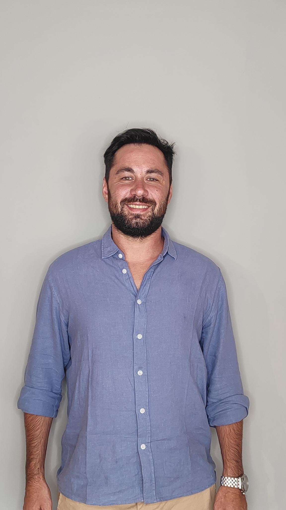

Sobre mí
Martín Moneta
Hola, soy Martín, tengo 33 años y soy originario de la ciudad de Lobos.
Soy Licenciado en Psicología por la UCES y, durante los últimos 10 años, me he desempeñado como comercial en el área de Staff Augmentation. A lo largo de mi carrera, he adquirido experiencia en la gestión de equipos y la negociación de soluciones empresariales
Con el deseo de expandir mis conocimientos y habilidades, he decidido comenzar esta nueva carrera en tecnología.
Mi objetivo es seguir creciendo profesionalmente, integrando conocimientos técnicos que complementen mi perfil y me permitan aportar de manera más completa en el entorno empresarial.